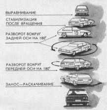

Вращение на 360°
В критической ситуации, связанной с вращением автомобиля на 360, 720° или более, можно констатировать тревожно-парадоксальный феномен, при котором водитель с большим стажем не только не имеет особых преимуществ в безопасности, но в ряде ситуаций попадает в более тяжкие ДТП, чем водитель-новичок. Тот чаще всего отделывается легким испугом, а автомобиль, не уходя с дорожного полотна, останавливается, развернувшись на 180 или 360°.
Ситуация с новичком объясняется отказом от каких-либо действий, что позволяет автомобилю самостабилизироваться. Большинство опытных водителей имеет автоматизированный навык торможения, который проявляется в случае потери уверенности в своих силах. Эта уверенность пропадает у опытных водителей в фазе критического заноса, у более опытных после вращения на 180°. В первом случае торможение вызывает боковое скольжение к обочине, а во втором – на встречную полосу движения. Результатом может быть опрокидывание либо лобовое столкновение. В обоих случаях последствия могут быть плачевны. Вывод – тормозить во время вращения нельзя!
Оказывается, само вращение не столь опасно, как вытекающее из него неуправляемое скольжение. Во время вращения следует опасаться бокового “упора”, который вызывает опрокидывание автомобиля. Если препятствия, выступа, канавы или ямы нет, то возможность опрокидывания, даже на автомобиле с высоко расположенным центром тяжести (самосвале, автоцистерне, автобусе), почти нереальна.
Методика стабилизации автомобиля при вращении включает три последовательных приема.
1. “Доворот” вращением вокруг передней оси до 180°. Выполняется в фазе докритического заноса поворотом рулевого колеса по направлению вращения с резким дросселированием при максимальной частоте вращения коленчатого вала двигателя.
2. Разворот вращением вокруг задней оси (см. прием 39) – “полицейский разворот”.
3. Выравнивание из вращения опережающим скоростным рулением и увеличением тяги двигателя (см. прием 39).
Этот способ стабилизации считается элементом высшей школы мастерства, его сложность связана со следующими моментами:
– опережающие действия в каждой из фаз стабилизации. Начало каждого приема накладывается на заключительную фазу предыдущего, особенно в рулении и дросселировании;
– четкая последовательная координация действий по управлению. Каждая операция совершается за определенное время, что позволяет поддерживать постоянный вращающий импульс;
– предельно быстрый перевод рулевого колеса из одного крайнего положения в другое, что обеспечивается работой двух рук (см. прием 5) или одной руки (см. прием 4);
– чередование трех вариантов дросселирования – резкое на максимальных оборотах, при закрытом дросселе, мягкое опережающее с увеличением тяги.
Самым сложным является очень быстрый перевод колес из одного крайнего положения в другое. Это позволяет перейти от вращения вокруг передней оси к вращению вокруг задней.

Если вы не знаете, что делать во время вращения, не делайте ничего и не тормозите. Автомобиль сам стабилизируется.
Постарайтесь перевести неуправляемое вращение в управляемое. Для этого в первой фазе увеличьте частоту вращения коленчатого вала двигателя до максимальной и поверните рулевое колесо в сторону разворота. Во второй фазе (после вращения на 180°) выключите сцепление, быстро поверните рулевое колесо в противоположную сторону до упора и выполните “полицейский разворот” (см. прием 39).
Опасайтесь наружного “упора”, так как удар о препятствие может привести к опрокидыванию.